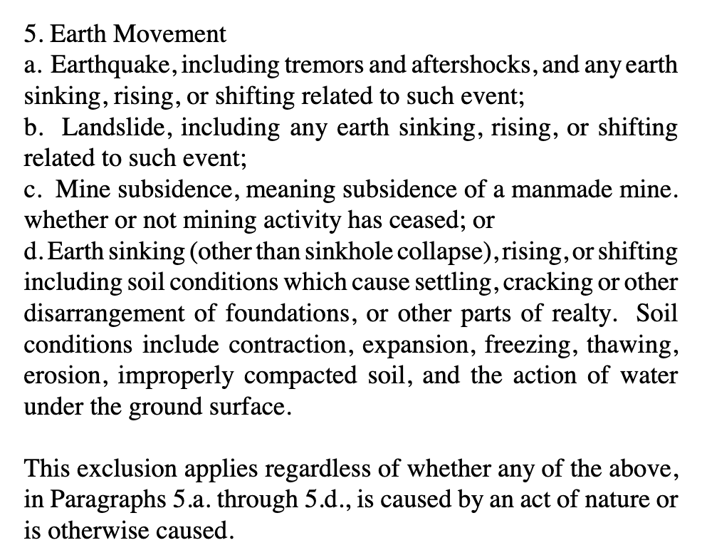

Dan Harding -> Landslide
In 2017 our house, backyard, and land in Pittsburgh, Pennsylvania, USA experienced a landslide.
Over time I hope to add some pictures/video of what the yard looked like previously. But in the still cover picture in the video below where the haybales are, the top of tarps, myself in the blue jacket, and the small patch of grass? That all used to be connected straight to the concrete and grass you see halfway down the still cover picture.
One of the first warning signs was a small "crack" in the backyard in Feb 2017. And here's a month later:
 And then *four* days later:
And then *four* days later:

At the time I was unable to find internet resources for how individual homeowners could survive such a thing - logistically or psychologically. I share my experience in the hope it helps even one person. At the very least, you'll know you're not alone.
I default to the first person because it's my natural writing style. My wife was equally involved. We had incredible, tangible support from friends, family, and professionals. Many of whom gave an extrodinary amount of themselves. It really did take a village. So, I'll switch interchangeably to third person.
Engineering
The problem is on a huge scale. This isn't something a few friends with buckets and shovels can fix. It's above the paygrade of many contractors. We had a few who gave ridiculous opinions such as using their skidsteer to move some dirt around. Handymen and heavy-duty landscapers alike gave it one look and knew it was not in their wheelhouse.
- Finding a geotechnical engineering firm that specializes in landslides.
- The firm has to think the problem is fixable.
- The company has to be willing and able to do the work. Many are not allowed by their company insurnace policies to work on residential properties.
- Professional engineering plans drawn and stamped.
- Build and design.
- Contacted dozens, 15-20 onsite...
Insurance
It's uncommon for home insurance policies to cover landslides. We didn't know until after the fact. If you read your policy you may notice something like this in the Exclusions Section (i.e. - we ain't gonna cover that): 
Our insurance company promptly denied our claim and dropped us from coverage completely. Thanks Erie Insurnace! What was our largest asset was then uninsurable from any further damage.
Condemnation and Living Arrangements
A few months into the landslide our home was condemned by the city as unlivable. We lived in three other friends' homes for two years.
City, County, State, Federal Help
We had plenty of lip service and meetings with various elected officials. It did nothing and was a waste of time. It's still an angle to attempt though.
Finances
Our bank was unphased. Mortgage payments were still due in full with no pause, hardship, or forgiveness. Thanks PNC!
Our largest asset was worth at least $300,000. Overnight it's worth and our equity became $0. The only recoupment was to find someone willing to buy the land for a few thousand dollars and bulldoze the house, and that's simply so we could walk away from the problem.
However, walking away not unscathed because with all equity vanished and a condemned, unlivable, unfixable property the usual course of action is to declare bankruptcy and start over - not in a good way. We were terrified because we loved our street, our neighbors, our neighborhood, our house. We worried we would never be able to afford the same quality again and would have to move somewhere far away and undesirable.
Fundraising
Dear friends organized an in-person fundraiser and started a YouCaring fundraising site (later bought by GoFundMe). We were fortunate and privileged to be loved on in such a tangible way. We were given ~$40,000(!) which helped us to miraculously break even. It mostly went to lawyer fees.
Life Continues
My wife and I both worked full-time. We had two kids in grade school and one in daycare. Life doesn't stop. All the regular adulting and logistics still have to happen.
Mental, Emotional, Psychological
Wow.
Legal
You'll likely need some lawyers. We had some amazing ones.
///
Feel free to contact me, although I hope you don't have to.